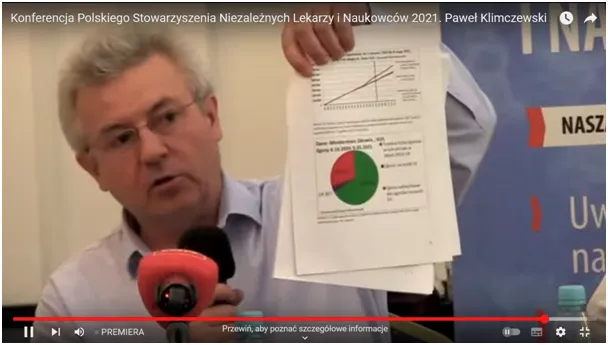
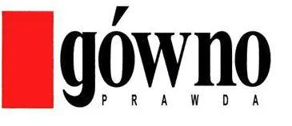

Gówno prawda panowie ministrowie, premierOWIE, marszałkowie, itp.!
Powstało w 2021 takie stowarzyszenie, na którego inauguracji prezentowałem bezsporne fakty na temat "srandemi". Za ten film miałem blokowane konta itp. Zawieszę ten film na swoim YT, warto sobie przypomnieć jak bezczelny i prostacki był numer z wirusem.
Niech zostanie jako memento dla wszystkich, którzy szukają "prawdy" w mediach. Kiedyś mawiano: "Kto słucha pana prezydenta Wałęsy sam sobie szkodzi!"

Dziś pamiętajmy, że kto czyta/ogląda media komercyjne nie zazna spokoju, jest to przedsionek piekła i szkoda tam zaglądać bo cuchnie tam okropnie. Gówno prawda panowie ministrowie, premierOWIE, marszałkowie, itp.!
Zapraszam na moją bezpieczną, szyfrowaną stronę, warto tam poszperać w starszych tekstach i nie tylko. https://pawelklimczewski.pl
Film z konferencji: https://www.youtube.com/watch?v=NT69DzmgaYw
RAPORT pdf: Prawdziwa tragedia narodu polskiego 2020/2021- walka z covid-19 https://pawelklimczewski.pl/2021/07/27/__trashed/
Paweł Klimczewski